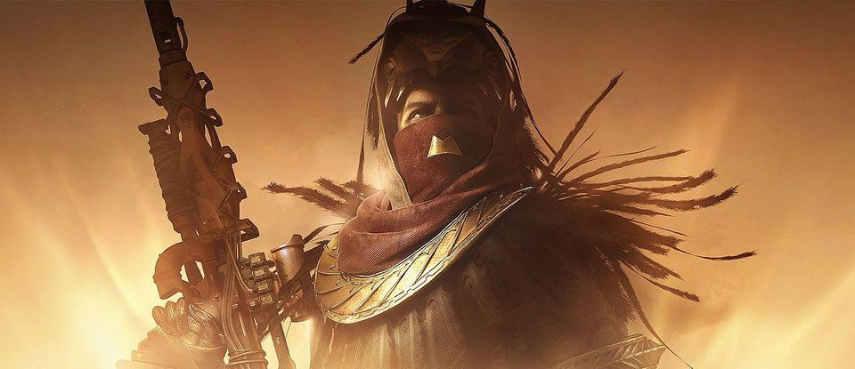

Osiris
What drives a Warlock to madness?
Ghosts choose those suited to war and heroism to be reborn. By nature or circumstance they go to battle against the Darkness, and through this battle they learn how to use the Light. But Warlocks, by their nature, fight a second, internal war. This is the war to understand a universe of secrets— a world that expects Guardians to fight without full knowledge of what they are or what they might hope to achieve.
You were a mighty warrior. I watched you at Six Fronts, and heeded the call of Saint-14 to appoint you Vanguard Commander, even when the Concordat claimed to have records proving you were a Golden Age experiment mis-incarnated as a human by an inept Ghost. Saint-14 assured me you were just a man without much patience for obfuscation.
I watched as you grew tired of strike missions and the grueling, unproductive sessions with the Cryptarchs. That was when I took you under my wing. I saw our future in you. But your curiosity was voracious— How much of a Guardian's personality and memories were true? How much had been fabricated by their Ghost? Did Guardians share particular personality traits— a willingness to yield to authority, a tendency to do anything anyone asked for the promise of uncertain reward, a blind knight-errant mentality? Had the Traveler manufactured all of you as living weapons?
I admit, I found your questions divisive and disloyal, and I feared you might be capable of breaking our unity when the City's position had grown so tenuous. Why divert attention away from the Traveler, our only hope?
And then it got worse, dabbling in thanatonautics, Ahamkara-lore, chasing after Xur and the tricks of the Nine. Launching expeditions into the Reef and beyond at a time when ships were irreplaceable. Your quest split Guardians along ideological lines. This was your greatest crime: Hunters chose to pursue your visions instead of protecting refugees, Titans assembled teams to chase the legendary Vault of Glass instead of striking the Fallen, and Warlocks turned away from the study of the Traveler in favor of your ultimate obsession... learning the exact nature of the Darkness.
When debate became argument, and argument became acrimony, I realized you had already become a cult of personality, attracting Guardians who wanted a clear idea of why they were fighting, what they faced, and how they would ultimately win.
I don’t know where you have gone, but I can no longer send Ghosts out to find you. Some come back— with tales of your death or how you went seeking answers from the far reaches of space and time. That you found a way to explore the Vex gate networks. That you've made breakthrough after breakthrough as to their origins— theories that a Guardian could not be simulated, that the Traveler might be an ontoformer or a god-incubator, that the Vex had diverged into multiple groups in order to secure 'an end state for every possible configuration of reality'.
I fear you have become as obsessed with the Vex as Toland was with the Hive. I've heard your own insane prophecies about pits and dead Hive kings. And of Crota, which now I cannot deny.
I hear stories of Lord Shaxx meeting with fireteams of Warlocks who have no shadow and never blink. Of jumpships slipping into the Reef on cold trajectories and meeting no intercept. Of questions hidden in matter engrams and answers decrypted on distant battlefields.
Perhaps you are still out there. If this reaches you, I would very much like to speak with you, to hear your theories in your own words.
Perhaps what drives a Warlock to madness is truth.